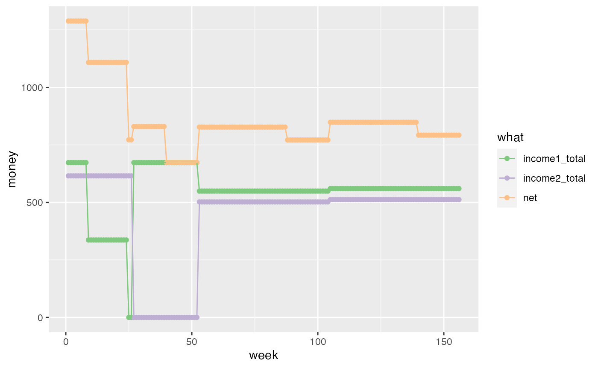
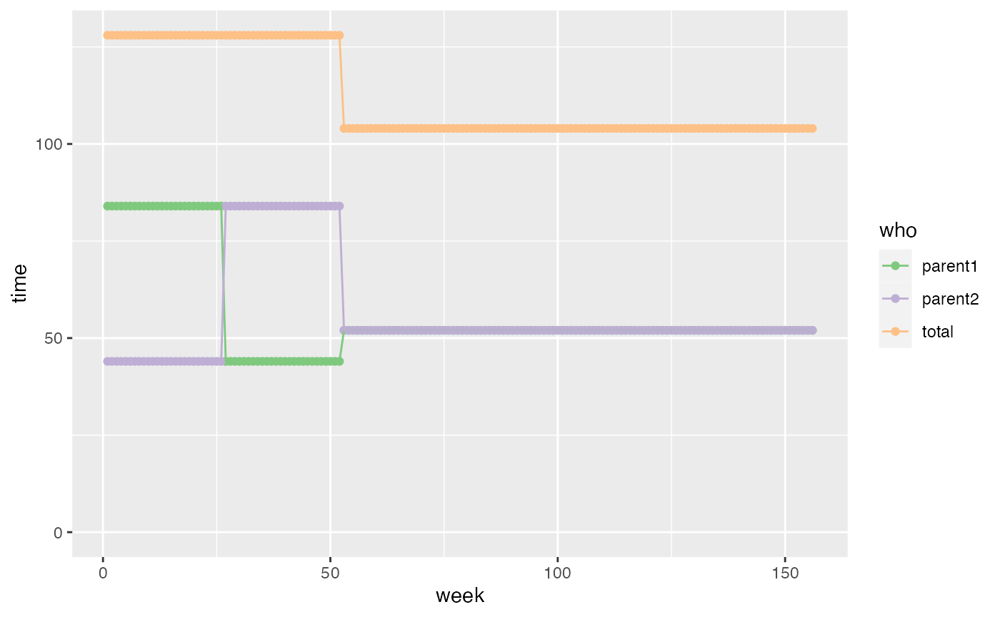

Using the babytime R package
tutorial.Rmd
library(babytime)
#> Loading required package: dplyr
#>
#> Attaching package: 'dplyr'
#> The following objects are masked from 'package:stats':
#>
#> filter, lag
#> The following objects are masked from 'package:base':
#>
#> intersect, setdiff, setequal, union
#> Loading required package: lubridate
#>
#> Attaching package: 'lubridate'
#> The following objects are masked from 'package:base':
#>
#> date, intersect, setdiff, union
#> Loading required package: ggplot2
#> Loading required package: tidyrThis package tries to map out how shared parental leave, and later on
nursery costs impact net income. It also tries to map out time spent by
each parent with the baby. Look at the babytime function to
see how it does this, but to just get going you need to:
- Specify your weekly plan for the duration to be calculated (e.g. 1 year of shared parental leave + 2 years of working with the child in nursery)
- Do this for both parents
- Plug the weekly plans into the
babytimefunction.
Draw up weekly plans
An example of generating a weekly plan for one parent is here:
parent1_wp <- work_plan("2018-08-25", # Baby's due date
on_leave(26), # 6 months on leave
working(26, "Mon-Fri 09:00-17:00"), # 6 months working full time
working(104, "Mon-Thu 09:00-17:00") # 6 months working mon-thu
)
#> Warning: `data_frame()` was deprecated in tibble 1.1.0.
#> Please use `tibble()` instead.
parent1_wp
#> # A tibble: 1,092 × 4
#> week section section_week at_work
#> <int> <int> <dbl> <Interval>
#> 1 1 1 1 2018-08-20 09:00:00 UTC--2018-08-20 09:00:00 UTC
#> 2 1 1 1 2018-08-21 09:00:00 UTC--2018-08-21 09:00:00 UTC
#> 3 1 1 1 2018-08-22 09:00:00 UTC--2018-08-22 09:00:00 UTC
#> 4 1 1 1 2018-08-23 09:00:00 UTC--2018-08-23 09:00:00 UTC
#> 5 1 1 1 2018-08-24 09:00:00 UTC--2018-08-24 09:00:00 UTC
#> 6 1 1 1 2018-08-25 09:00:00 UTC--2018-08-25 09:00:00 UTC
#> 7 1 1 1 2018-08-26 09:00:00 UTC--2018-08-26 09:00:00 UTC
#> 8 2 1 2 2018-08-27 09:00:00 UTC--2018-08-27 09:00:00 UTC
#> 9 2 1 2 2018-08-28 09:00:00 UTC--2018-08-28 09:00:00 UTC
#> 10 2 1 2 2018-08-29 09:00:00 UTC--2018-08-29 09:00:00 UTC
#> # … with 1,082 more rowsAnd a similar plan can be set up for the other parent:
parent2_wp <- work_plan("2018-08-25", # Baby's due date
working(26, "Mon-Fri 09:00-17:00"), # 6 months working full time
on_leave(26), # 6 months on leave
working(104, "Mon-Thu 09:00-17:00") # 6 months working tue-fri
)Based on these timings, the package is going to calculate which days the baby will have to be in nursery due to both parents being at work. So it assumes that when parents aren’t at work or on leave the baby is in nursery. Run it here:
out <- babytime(parent1_wp = parent1_wp,
parent2_wp = parent2_wp,
baby_waking_time = "07:00",
baby_sleeping_time = "19:00",
parental_leave_option = 1,
statutory_weekly_pay = 156.66,
hourly_nursery_rate = 8.75,
parent1_annual_salary = 35000,
parent2_annual_salary = 32000,
annual_salary_increment = 0.02
)This will spit out a lot of tables. Look at the help page for
babytime to see what those tables are. But they’re
summarised in two plots. First, a plot of weekly earnings:
out$earnings_plot
Second, a plot of hours per week spent with the baby:
out$babytime_plot
sessionInfo()
#> R version 4.2.1 Patched (2022-09-06 r82817)
#> Platform: aarch64-apple-darwin20 (64-bit)
#> Running under: macOS Monterey 12.6
#>
#> Matrix products: default
#> BLAS: /Library/Frameworks/R.framework/Versions/4.2-arm64/Resources/lib/libRblas.0.dylib
#> LAPACK: /Library/Frameworks/R.framework/Versions/4.2-arm64/Resources/lib/libRlapack.dylib
#>
#> locale:
#> [1] en_GB.UTF-8/en_GB.UTF-8/en_GB.UTF-8/C/en_GB.UTF-8/en_GB.UTF-8
#>
#> attached base packages:
#> [1] stats graphics grDevices utils datasets methods base
#>
#> other attached packages:
#> [1] babytime_0.1.0 tidyr_1.2.0 ggplot2_3.3.6 lubridate_1.8.0
#> [5] dplyr_1.0.10
#>
#> loaded via a namespace (and not attached):
#> [1] highr_0.9 RColorBrewer_1.1-3 bslib_0.4.0 compiler_4.2.1
#> [5] pillar_1.8.1 jquerylib_0.1.4 tools_4.2.1 digest_0.6.29
#> [9] gtable_0.3.1 jsonlite_1.8.0 evaluate_0.16 memoise_2.0.1
#> [13] lifecycle_1.0.2 tibble_3.1.8 pkgconfig_2.0.3 rlang_1.0.5
#> [17] cli_3.4.0 DBI_1.1.3 yaml_2.3.5 pkgdown_2.0.6
#> [21] xfun_0.33 fastmap_1.1.0 withr_2.5.0 stringr_1.4.1
#> [25] knitr_1.40 desc_1.4.2 generics_0.1.3 fs_1.5.2
#> [29] sass_0.4.2 vctrs_0.4.1 systemfonts_1.0.4 grid_4.2.1
#> [33] rprojroot_2.0.3 tidyselect_1.1.2 glue_1.6.2 R6_2.5.1
#> [37] textshaping_0.3.6 fansi_1.0.3 rmarkdown_2.16 farver_2.1.1
#> [41] purrr_0.3.4 magrittr_2.0.3 ellipsis_0.3.2 scales_1.2.1
#> [45] htmltools_0.5.3 assertthat_0.2.1 colorspace_2.0-3 labeling_0.4.2
#> [49] ragg_1.2.2 utf8_1.2.2 stringi_1.7.8 munsell_0.5.0
#> [53] cachem_1.0.6